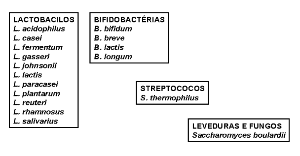
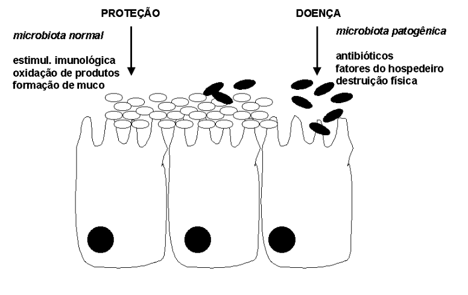

43 Probióticos e Prebióticos
43.1 Introdução
Probióticos constituem microorganismos vivos que, quando ingeridos, exercem algum benefício ao organismo animal além da nutrição básica. Podem melhorar a defesa do organismo, combater ou prevenir contra infecções e tumores, aprimorar a digestibilidade de nutrientes, regular a microbiota intestinal e prevenir contra diarréia simples ou aquela induzida pelo uso excessivo de antibióticos.
Probóticos não são tão difíceis de se encontrar como aparentam. Exemplos destes alimentos funcionais constituem os diversos produtos de fermentação do leite, como leites fermentados e iogurtes. Como se tratam de microrganismos ingeridos que colonizam o trato intestinal, probióticos são, por definição, e ainda que em teor reduzido, organismos já presentes na estrutura dos intestinos, os quais possuem mais de 400 famílias de bactérias. Além dos probióticos existem também os prebióticos.

Esses não são microrganismos vivos, mas produtos metabólicos dos mesmos, e que exercem efeitos similares aos probióticos. Assim, quando uma bactéria não patogênica degrada alguns polissacarídios liberando uns oligossacarídios modificados, esses últimos podem constituir prebióticos, desde que exerçam alguma função benéfica a quem os consumir.
Exemplos de prebióticos são os FOS (frutoligossacarídios), as inulinas, os chamados “neosugars”, e outros oligossacarídios, de modo geral. Alguns FOS estão naturalmente presentes na constituição de vegetais, tais como alho, cebola, trigo e chicória. Por possuir diversas características de homeostasia (equilíbrio) do metabolismo animal, probióticos e prebióticos estão sendo considerados, cada vez mais, substitutos eficazes para o tratamento precognizado com antibióticos.
43.2 Detalhes
Probióticos são definidos por microrganismos vivos que, quando ingeridos em determinada quantidade (10\(^{5}\)-10\(^{7}\) células / g), exercem benefícios ao organismo que vão além da nutrição complementar. Podem ser consumidos in natura, liofilizados (em pó) ou em um fermentado lácteo (iogurte, leites fermentados) ou aquoso (mel, açúcar mascavo, suco de frutas). Probióticos podem atuar através de sua colonização no trato gastrintestinal de diversas maneiras, como as apresentadas na figura a seguir, e que exemplifica alguns dos benefícios produzidos pelo consumo dos mesmos.

Na produção animal probióticos tem sido vistos cada vez mais como uma alternativa ao uso maciço de antibióticos administrados em doses subclínicas. Não obstante, alguns países europeus tem banido o emprego de diversos antibióticos como aditivos na alimentação animal, tais como a espiramicina, a tilosina, a virginiamicina e a bacitracina, proibidos desde 1999 pela Comunidade Européia.
O uso de antibióticos tem gerado grande inquietação pública face a problemas de toxicicidade, alergia e desenvolvimento de resistência, estimulando o interesse clínico pelos probióticos como suplemento ou terapia auxiliar. Dessa forma, probióticos podem ser utilizados com o intuito de se prevenir contra o estresse gerado no transporte de animais, contra infecções de origem bacteriana ou fúngica, contra diarréia induzida ou não pelo uso excessivo de antibióticos, quando da mudança da dieta animal (influência na microbiota intestinal), e para modular o sistema imune e gastrintestinal.
Em resumo, probióticos são mais eficientemente utilizados em ocasiões estressantes, como na desmama, na mudança de alimentação, em falhas na ingestão de colostro, durante o transporte dos animais, em situações de alta densidade de indivíduos, e durante ou após o tratamento com antibióticos.
O modo de ação dos probióticos se dá por competição a sítios protéicos de adesão nas células da mucosa gastrintestinal, através da síntese de diversos antibacterianos (peptídios, proteínas, oligossacarídios e esfingomielinas), por neutralização de enterotoxinas, alteração metabólica, ou aumento da imunidade celular e humoral.

43.2.1 Prebióticos
De modo similar atuam os prebióticos, produtos metabólicos da atividade microbiana sobre substratos específicos, normalmente derivados de polissacarídios. Os prebióticos podem ser definidos ainda como ingredientes não digeríveis da dieta que afetam beneficamente o organismo animal, pelo estímulo seletivo ao crescimento e/ou atividade de um limitado grupo de microrganismos no cólon, podendo melhorar a saúde do hospedeiro.
São exemplos de prebióticos os frutoligossacarídios (FOS, oligossacarídios de glicose com uma ponta final de frutose), os “neosugars”, as inulinas (FOS de trinta resíduos de açúcares), a lactulose, o lactitol, os transgalactosídios (TOS), e os mananoligossacarídios (MOS).
Os “neosugars” (kestose, turanose, nistose, neokestose, malturose) podem ser definidos como FOS de cadeia curta preparados enzimaticamente a partir da sacarose. Aparentemente inertes na boca e no intestino delgado, são fisiologicamente úteis por melhorarem o equilíbrio da microbiota do cólon.
Os MOS, por sua vez, constituem carboidratos complexos contendo D-manose, um derivado da parede celular da levedura de padaria, Saccharomyces cerevisae. Dietas contendo manose ou seus derivados podem atuar dificultando a adesão bacteriana e diminuindo a concentração de patógenos.
43.2.2 Probióticos simbiontes.
Alguns probióticos coexistem na natureza na forma de um conjunto simbiótico formado por diversas cepas de lactobacilos, estreptococos, e leveduras, os chamados probióticos simbiontes, dos quais são representantes o quefir e o cogumelo tibetano. Essas colônias de microrganimos são dotadas da capacidade de produzir um material gelatinoso formado em sua maioria por polissacarídios insolúveis, dando um aspecto de grãos um pouco maiores que o de milho, e de natureza propagável, ou seja, os grãos se multiplicam em condições ideais de crescimento. Neste sentido, e apesar de pouco explorados como alimento funcional, podem constituir-se em excelente probiótico, já que possuem diversas cepas reconhecidamente probióticas em sua estrutura granular. de fácil cultivo e propagação. Além disso, podem ser utilizados após parcial desidratação dos grãos, sendo pulverizados na ração animal como suplemento nutricional.
43.2.3 Leveduras na alimentação de ruminantes.
Entre os probióticos utilizados no arraçoamento de animais de produção, tem se destacado o papel de culturas de leveduras, tais como Sacharomyces cerevisae, organismos ricos em proteínas de alta qualidade (45 a 55 %), carboidratos, lipídios e vitaminas do complexo B.
Diversos mecanismos tem sido sugeridos para se explicar os efeitos que as culturas de leveduras exercem sobre a fermentação e produção ruminal, partindo-se do pressuposto que o aumento do número de bactérias no rúmen é o efeito mais importante desta adição. As leveduras não crescem em fluidos ruminais, mas retêm a atividade metabólica e a viabilidade, gerando mecanismos considerados responsáveis pelo aumento da quantidade de bactérias ruminais.
Dentre esses mecanismos podem ser mencionados a remoção de oxigênio devido a alta atividade respiratória das leveduras, melhorando a colonização de bactérias ruminais anaeróbicas (1,3 mg de leveduras permite uma redução média de 70 % na taxa de desaparecimento de oxigênio).
Além disso, leveduras fornecem diversos nutrientes que estimulam a atividade microbiana ruminal, como intermediários do ciclo de Krebs, além de fatores de crescimento, enzimas, vitaminas e aminoácidos. A figura abaixo resume os efeitos metabólicos da suplementação dietética de leveduras em bovinas.

43.3 Aplicação
43.3.1 Ionóforos e monensina
Entre os prebióticos atualmente prescritos na produção animal encontram-se os ionóforos como a narasina, a salinomicina, o lasalocid, e a monensina. Ionóforos são compostos solúveis na membrana celular que, após a combinação com determinados íons, passam a fazer parte dessa estrutura, desempenhando uma função de troca iônica, normalmente se combinando à cátions.
A monensina, por exemplo, promove uma captação de sódio intracelular em bactérias Gram-positivas e células eucariontes, desvirtuando a trocadores catiônicos e a bomba de Na+/K+, limitando, assim, a produção de energia nestas células.
A monensina é um composto secretado por Streptomyces cinnamonensis, e que atua inibindo a proliferação de bactérias Gram-positivas e agentes parasitários. Bactérias Gram-positivas atuam sobre os carboidratos convertendo-os pricipalmente a ácido butírico e acético, os quais desaparecem no ciclo de Krebs na forma de CO2 e de gás metano no rúmen, e cujos excessos podem estar relacionados a quadros de acidez metabólica, laminite e ruminite.
As bactérias Gram-negativas, resistentes à monensina por possuirem membrana externa coberta por proteínas, lipopolissacárides, lipoproteínas, e canais protéicos de passagem com poros de tamanho similar à monensina (500 Dáltons relativos), possuem como produto glicídico final o ácido propiônico, não perdido durante o processo fermentativo.
Em resumo, dentre os principais efeitos da suplementação com monensina foram observados um aumento da produção de propionato e redução de na de metano, aumento da digestibilidade da matéria seca, diminuição da produção de proteína bacteriana ruminal, redução de corpos cetônicos, menor produção de ácido láctico no rúmen, redução da biohidrogenação ruminal, aumento da retenção de nitrogênio, e aumento no fluxo de aminoácidos que chegam ao duodeno. Ainda não foram observadas mudanças nos parâmetros reprodutivos em bovinos com o uso de monensina.